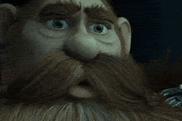
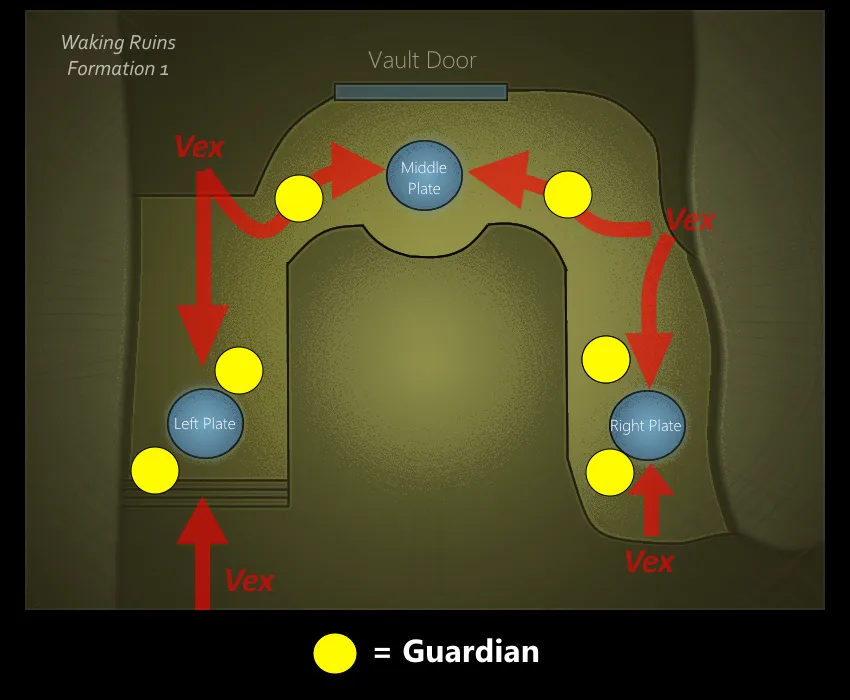
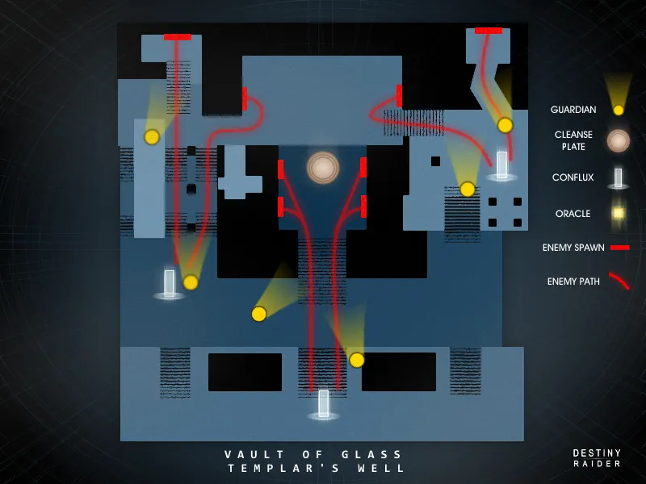
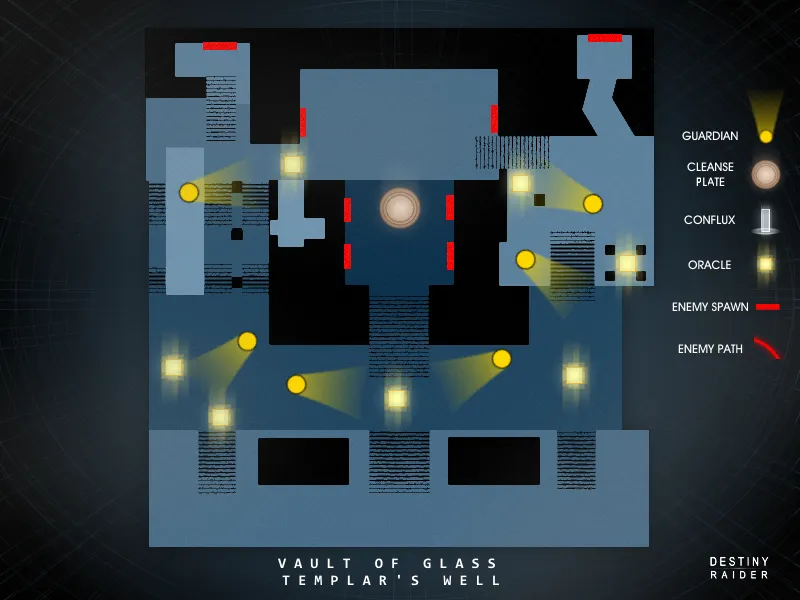
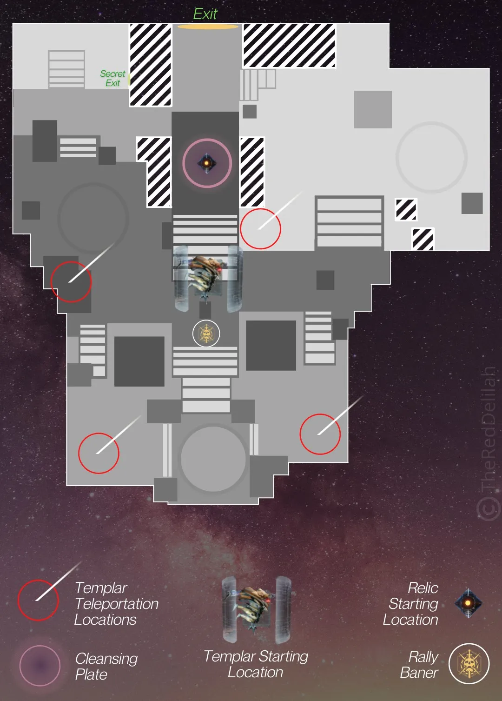
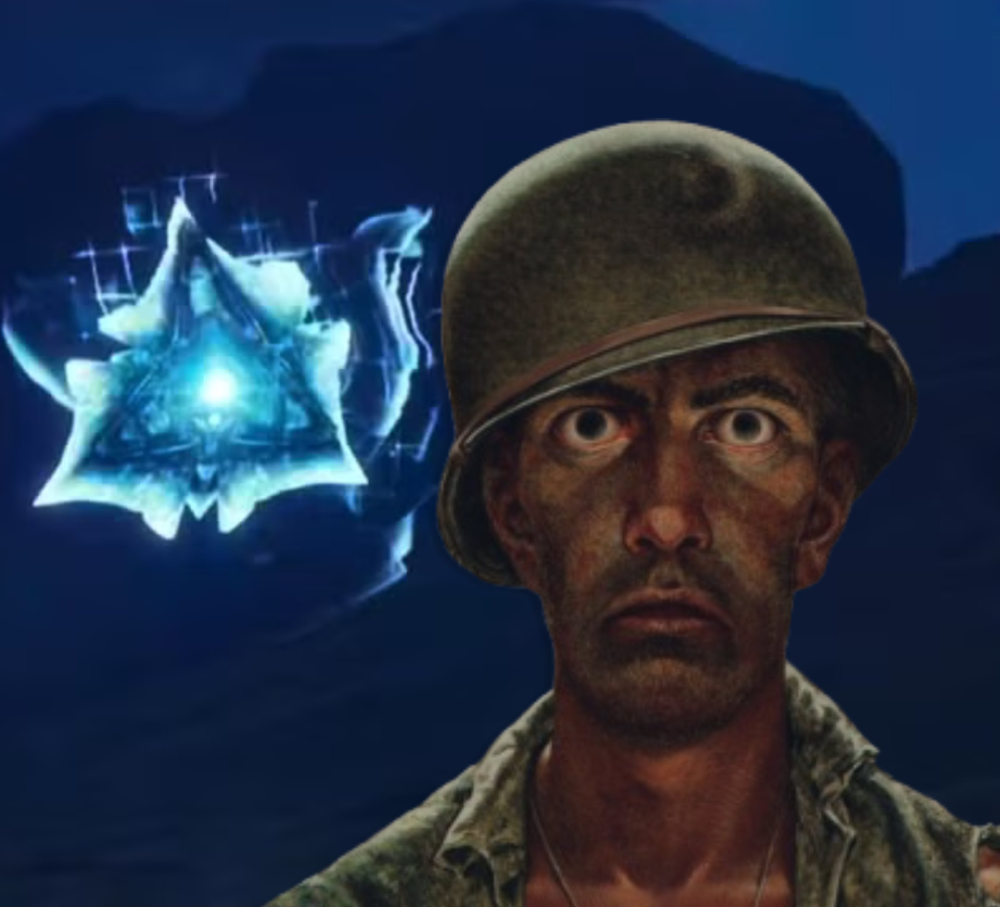
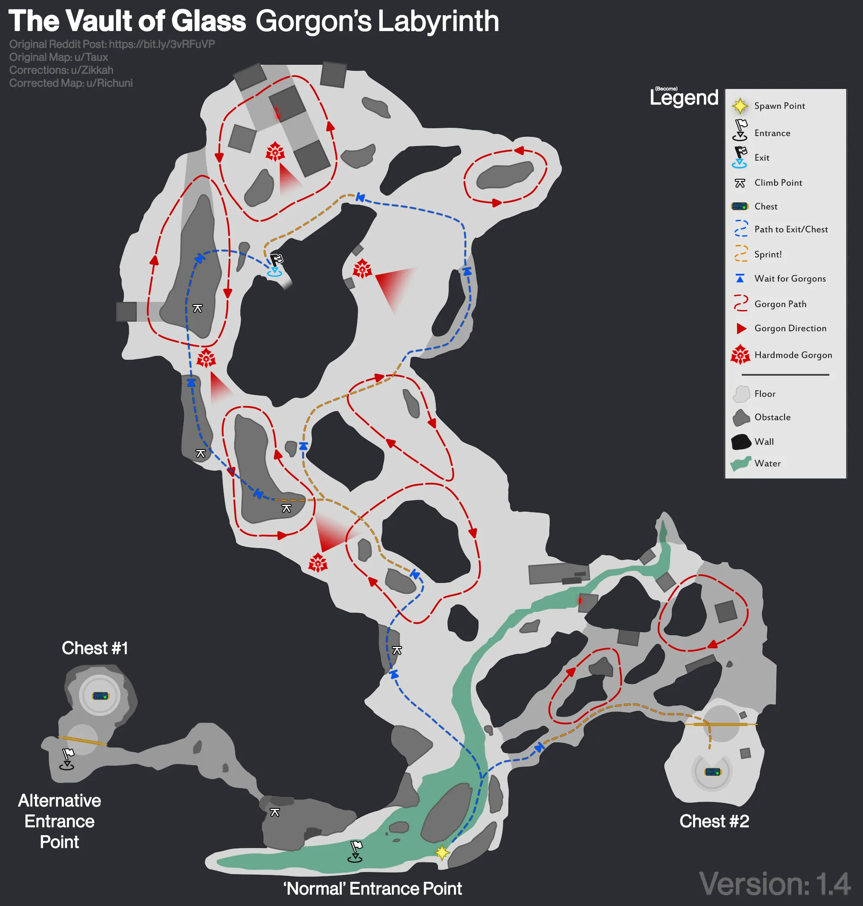
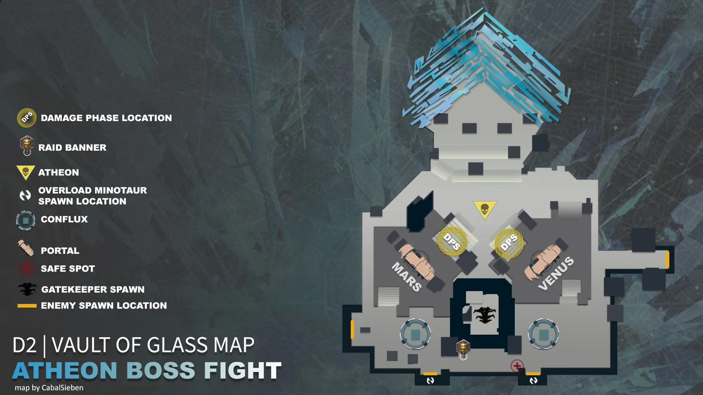
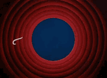

Vault of Glass (V.O.G)
|back

Encounter 1: Dinnerware
The Plates encounter used to be one of the coolest things in D1, but then Bungie (company valued at $3.6 billion btw, riddle me how they couldn't afford the server space) removed Venus as a patrol zone in D2, so now we don't get to have blueberries helping us with the plates.
The concept is simple, 3 groups of 2 divide onto the plates below and DO NOT leave them until the spire is opened! Clear adds, and minibosses until the vault decides its time to have a go at it.

Encounter 2: Flux this encounter
The map below is what we will be referencing!

As with the beginning (and a recurring theme throughout this raid) the fireteam will split into 3 groups of 2, to defend each of the confluxes
Once the encounter starts, players will be doing the following:
- Clearing adds, and preventing all enemies from sacrificing on the confluxes
- Killing Minotaurs, these ones are special as they drop radiolaria fluid at their feet when they die. If a player so-happens to step through this puddle, they will gain a debuff called "Marked for negation". It is crucial at this point that they are to run to the cleansing pool (middle of the map below the Templar) before the Templar initiates his negation ritual, which will kill all players with the debuff attached to them.
- Dealing with Wyverns that will bum-rush the confluxes in an attempt to end your run.
This encounter happens in 2 phases, one where the whole fire team is defending the middle conflux, and after eliminating a minotaur (3-4 wyvern spawns), the other 2 confluxes on the left, and right will spawn, which will then divide the fireteam into 3 groups of 2. Keep defending, and go HAM with your guns until the encounter is done! Make sure your buff never gets negated.
Encounter 3: Oralcles ;)
Alright, so the Templar isn't just going to let you waltz in and shoot him in the face. First you've got to deal with his little alarm system: the Oracles. These are floating geometric shapes that spawn around the arena and need to be shot in the exact order they appear. Mess that up and the whole team gets Marked for Negation (yes, again) and you all have to haul yourselves to the cleansing pool like a walk of shame.
The map below is what we'll be referencing!

We're splitting roles here:
- 3 players on Oracle duty: you're watching the spawns and calling/shooting them in order. We name them by position: L1/R1 are closest to the banner, L2/R2 are the middle row, and L3/R3 are in the back. Assign one person per zone so nobody's tripping over each other yelling "WHICH ONE IS THAT."
- 3 players on adds: you're handling the waves of trash mobs and the Hobgoblins that snipe from the corners. Don't ignore the Hobgoblins, they will absolutely ruin the Oracle shooters' day.
There are 5 rounds of Oracles total, starting with 3 and adding one each round until you've got all 7 up at once in the final wave. The good news is the Oracle shooters don't have to memorize anything in advance; just watch which ones spawn first, second, third, etc., and shoot them in that order. Simple in theory, absolute chaos in practice when someone decides to go rogue and shoot the wrong one. I'd consider it worse than running Cold Heart > Divinity in a day one raid. Don't be that person.
Encounter 4: Temple Run
The Templar is a big baby we're about to take candy from.
The map below is what we'll be referencing!

One player picks up the Aegis Relic, this glowy shield thing sitting where the cleansing pool used to be. This is now your relic holder's whole personality for the encounter. Rules for the relic:
- Drop it and you have about 9 seconds to pick it back up before the whole team wipes. Do not drop the relic.
- Using your class ability (dodge, rift, barricade) drops it. Yes, even by accident. Don't use your class ability while holding the relic.
- It has a block, a melee, and a Super. The Super is what strips the Templar's shield to begin DPS. This is the relic holder's most important job.
The encounter goes like this:
- A wave of 3 Oracles will spawn (same deal as last encounter, shoot them in order). Once they're gone, the relic holder charges the Aegis Super and fires it at the Templar to drop his shield. DPS time!
- While the team is dumping damage, the Templar will try to teleport to one of 4 spots around the arena. The relic holder needs to find the glowing ring and stand in it to block the teleport. Stand there until the ring disappears, don't leave early or he'll just teleport anyway and your DPS phase ends. Annoying? Absolutely. Is it your job, relic holder? Yes, yes it is.
- The Templar will also randomly detain a player in a Vex bubble. If that's you, call it out immediately. Everyone else shoot the bubble. If it's the relic holder, shoot them out fast, they've got places to be.
Rinse and repeat until the big guy is dead. If you keep blocking his teleports, he'll summon a wave of Minotaurs in frustration (more or less harmless with a Well of Radiance down). Pop a Well near the Templar's spawn and go absolutely ham.
Encounter 5: He's right behind me isn't he?

I'm so fekkin scared

Encounter 6: Gatekeep Final Boss
This is where the raid really starts asking a lot of you. Gatekeepers is a coordination-heavy encounter that sounds more chaotic than it is. Once you get it, it clicks. The key is knowing your role and not being an idiot <3
The map below is what we'll be referencing!

Roles for this encounter:
- 2 Plate Holders: stand on the plates to keep the portals open. Waves of Vex will come for you, including Overload Minotaurs every couple waves. Hold the line.
- 1 Mars player and 1 Venus player: go through the portals and defend the conflux inside. Clear ads, and holler when a Praetorian (shielded minotaur) or Wyvern spawns on your side.
- 1 Relic Holder: same Aegis from the Templar encounter. Your job is to go through portals and strip Praetorian shields. The Praetorians cannot be killed any other way.
- 1 Floater: you're the backup. Help on plates, help with ads, and pick up the relic when needed.
Froot loop: Praetorian spawns on Mars or Venus, that player calls it out, relic holder goes through the right portal, wrecks the Praetorian with the Aegis, drops the relic (weapon swap to drop it), the player on that side grabs it, relic holder swaps to Floater, old Floater picks up relic duties. It rotates constantly. If this sounds like a lot, it is. But it becomes muscle memory after one or two rounds.
One heads-up: entering a portal with the Aegis gives you a debuff called "Teleport Destabilised", meaning you can't use another portal for a bit. This is exactly why the relic has to be passed off inside the portal. Don't forget to drop it before you try to leave or you're just stuck in there looking like a doofus.
Once the chat says "A new conflux appears before the Glass Throne," everyone hauls ass back to the main room for the Final Stand. A conflux spawns in the middle, Praetorians and Wyverns come in waves from three directions, and you need to kill them all. Three waves and it's done. Hold it together for just a little longer.
Encounter 7: Atheon, Time's Sugar Daddy
(yes, I reused the same map, it's the same room)
Atheon is the final boss of the Vault of Glass and he is an absolute pushover.
The encounter begins when someone breaks the Vex box in the middle. Atheon spawns. Harpies flood the arena. Good morning.
After a short period, Atheon will randomly teleport 3 players to either Mars or Venus. This is not optional and cannot be controlled. The 3 people left outside have jobs:
- Stand on the plate corresponding to the side the team got sent to, this opens the portal.
- Watch the Oracles that spawn in the main room and call out the order for the team inside. Left, Middle, Right. Use consistent callouts and for the love of all things holy, stick to them.
- Kill Supplicants (those little exploding bastards). They don't affect mechanics but they're annoying ash
The 3 players inside Mars/Venus need to:
- Pick up the Aegis relic spawning next to them.
- Kill the Gatekeeper Hydra to open the portal from the inside.
- Move to the front of the area where the Oracles will spawn.
- Shoot the Oracles in the order called out by the team outside. Get this wrong and it's an instant wipe. No Marked for Negation grace period here.
- Keep an eye on the Marked by the Void debuff, your screen will go progressively darker while you're inside. The Aegis holder needs to hold block periodically to cleanse the team. Don't let it stack or you're blind and then you're dead.
After 3 rounds of 3 Oracles, the chat says "Guardians make their own fate" and that means DPS phase is live. Everyone piles in, pops their Well, and unloads everything into Atheon's face. You'll have a buff called Time's Vengeance that shows how long you've got, and around 15 seconds left on that timer, Atheon will try to detain someone. That player needs to immediately run away from the team so nobody else gets caught in the bubble. Everyone else: shoot them out.
Repeat until he's dead. He'll keep sending teams through portals, you'll keep calling Oracles, you'll keep doing DPS phases yada yada yada
Now go grab your loot and argue about who deserves Vex Mythoclast more (It's not dropping. It never drops. 86 runs and counting)



Est. June, 2026 | Human Made.